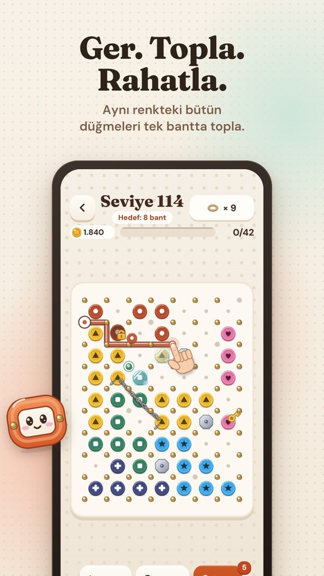
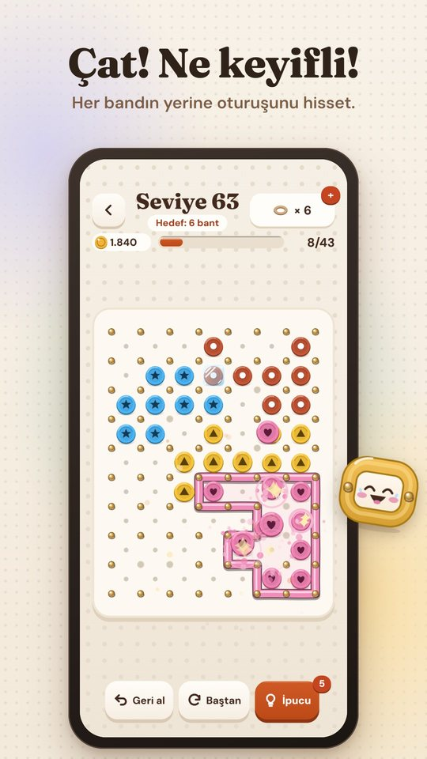
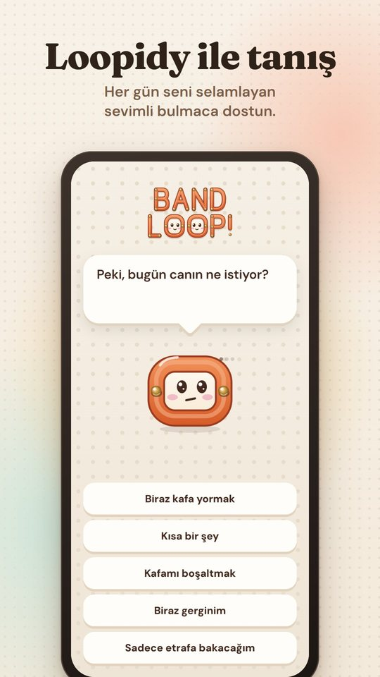
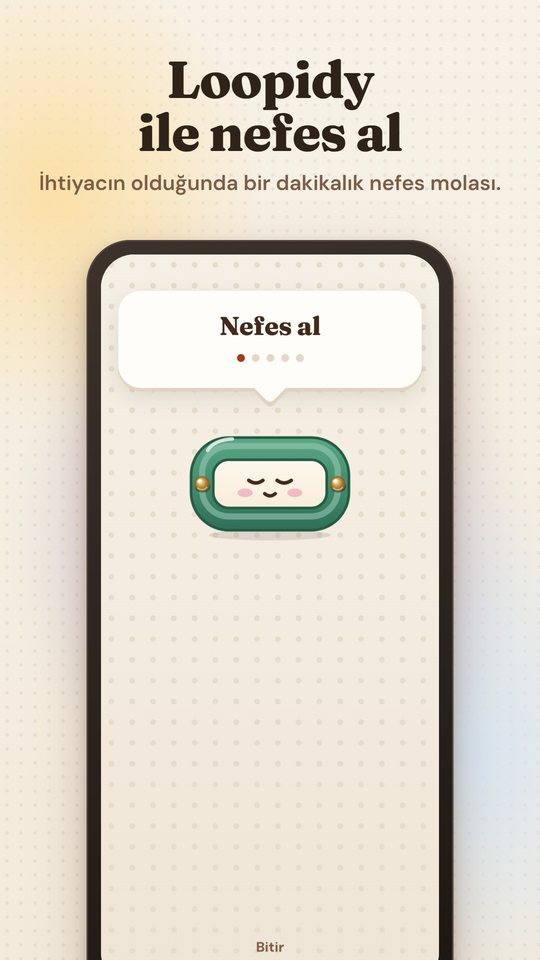
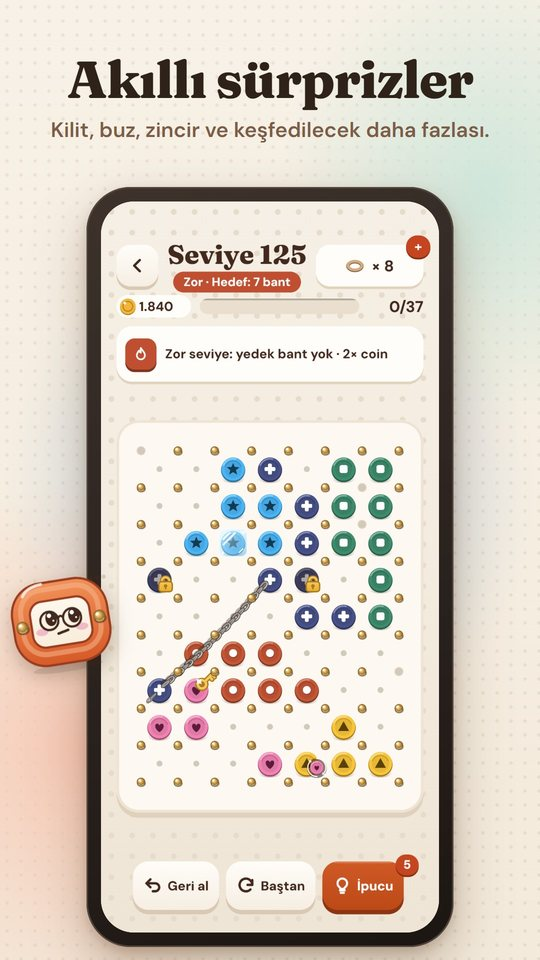
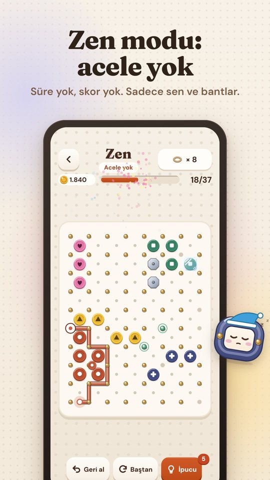

- Loopidy ile tanışHer açılışta seni selamlayan, ruh hâline göre oyunu açan sevimli bulmaca dostun.
- Bir dakikalık nefesLoopidy uzayınca nefes al, kısalınca ver. İstediğin an kısa bir mola.
- Zen moduSüre yok, skor yok, kaybetmek yok. Sadece sen ve bantlar.
- 240 seviye24 bölüm; kilit, buz, zincir, bomba ve ayna tahtalar gibi yeni sürprizler.
- Tarzını seç8 tema ve 11 bant görünümü: dikişli, simli, boncuk, jöle…
- Herkes içinHer rengin kendi şekli var (renk körü dostu); internetsiz oynanır, ilerlemen istersen bulutta.
Ekrandan






English
The relaxing band puzzle
Leave the day's stress at the door. Stretch a rubber band over the pegs, gather every button of one color in a single loop and feel it snap into place. Meet Loopidy, your cozy puzzle buddy who greets you every day, opens the right mode for your mood and breathes with you for a minute whenever you need it.
- 240 levels in 24 chapters with locks, ice, chains, bombs and mirror boards
- Zen mode: no timer, no score, no losing
- A new daily puzzle, 8 themes and 11 band styles
- Color-blind friendly shapes, plays offline, optional cloud save (Google Play Games / Game Center)